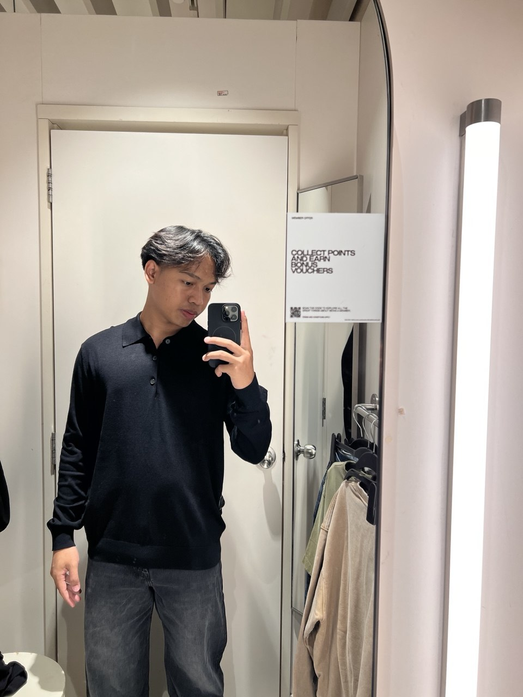

My Story
How a fourth-choice course turned into something I actually enjoy.
Read more ZULHAZRI AIMAN
ZULHAZRI AIMAN

Hi, I'm
A 20 years old from Kota Kinabalu, Sabah. Student of Information Management at UiTM. I build websites for fun and outside class you will find me around cars, games and music.
My friends would describe me as reliable, easy to work with and always ready to help and usually the one making them laugh too. I'm comfortable working on my own, but I enjoy working in a team just as much.
I like understanding how things work whether it is an engine, a game or a website. That is probably why I enjoy watching people fix cars as much as I enjoy fixing my own code.